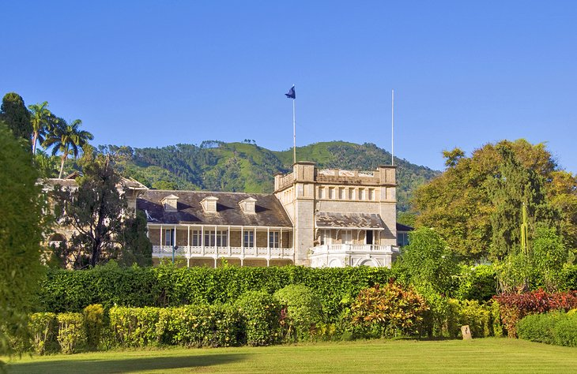

2
Presidential Palace
Capital of the nation, this bustling business center is known for its many fine examples of colonial-style architecture, as well as a few tourist attractions.One of the most popular things to do in Port of Spain is to soak up the architectural highlights around Queen's Park Savannah. Here, elegant mansions called the "Magnificent Seven," line the sprawling green space. Architecture fans should also visit the impressive Red House Parliament in Woodford Square.Near Queen's Park Savannah, you will also find the beautiful Royal Botanic Gardens, bordering the president's grand residence, and the National Museum and Art Gallery, with exhibits on local art, history, and culture.But Port of Spain is perhaps most famous for its exuberant Carnival. The city comes alive the Monday and Tuesday before Ash Wednesday with an extravaganza of colorful costumes, limbo competitions, and contagious calypso and soca rhythms.